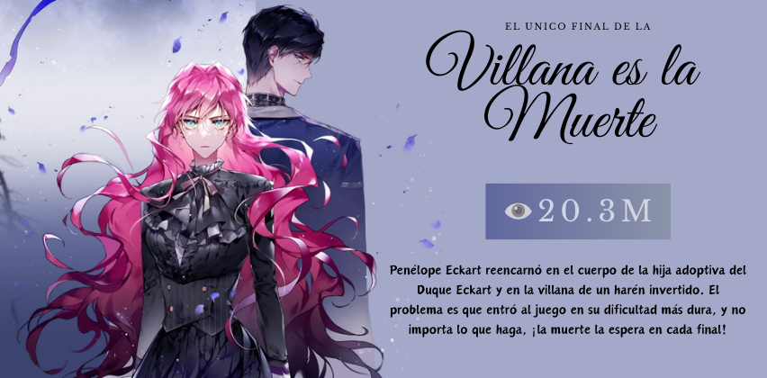
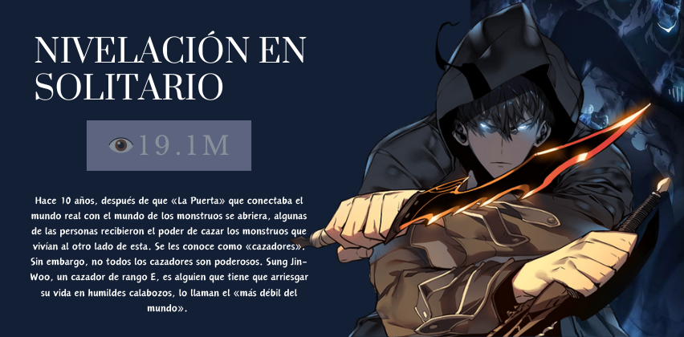

-

- 
- 
Dokja/Lector
Recientes
{kind=link}
La Emperatriz se volvío a casar Navier Ellie Trovi era una emperatriz perfecta en todo -- inteligente, valiente, y socialmente adepta. Era amable con sus súbditos y devota a su marido. Navier estaba perfectamente contenta de vivir el resto de sus días como la sabia emperatriz del Imperio Oriental.
{kind=link}
El unico final para la villana Penélope Eckart reencarnó en el cuerpo de la hija adoptiva del Duque Eckart y en la villana de un harén invertido. El problema es que entró al juego en su dificultad más dura, y no importa lo que haga, ¡la muerte la espera en cada final!
{kind=link}
Debajo del roble Una impecable historia de amor de los imperfectos. La tartamuda Maximilian se ve obligada a casarse con Sir Riftan, pero él se va de campaña después de su noche de bodas. 3 años después, regresa triunfalmente, listo para apreciarla. Cuando finalmente comienza la vida con su esposo, solo tiene una pregunta: ¿merece este amor y felicidad?
{kind=link}
Soy la esposa del protagonita Poseí el cuerpo de «Fiona», la última villana cuya alma fue condenada al sufrimiento eterno después de su espantosa muerte a manos del héroe del mundo.
Fue torturada por su propia familia solo porque era una hija ilegítima.
Y así… llegando seis años antes del comienzo de la novela, ¡me enviaron a la guerra a la edad de trece años! Afortunadamente, como la mayor villana de la historia, Fiona era una maga genial.
{kind=link}
Mi Duke Dlubless Un día, Jade Kinsel se encuentra en el mundo de una novela. Decide que, ya que está aquí, intentará cambiar el final de su personaje favorito, el duque Dubless. En lugar del triste y desvalido segundo protagonista que pierde a la chica y acaba muriendo solo, Jade le buscará su propia pareja y le permitiría tener un final que realmente se merece.
{kind=link}
Nivelación en solitario Hace 10 años, después de que «La Puerta» que conectaba el mundo real con el mundo de los monstruos se abriera, algunas de las personas recibieron el poder de cazar los monstruos que vivían al otro lado de esta. Se les conoce como «cazadores».stay tuned.
Proximos...
- UN DÍA MÁS! Cansado de la vida, Joo decide terminar de una vez por todas, pero le sale mal y termina en otro mundo.
- Casate con mi maridoCon un plan debajo la manga, HaeJin decide regresarle todo el mal a su mejor amiga y ex esposo.
- De ventana a ventanaUma, quien es una cantante espectacular triunfa.
- Aceleed Gatos con superpoderes y perros que vuelan, un mundo de electricidad.
- HIT VIRAL Un luchador con un gran futuro por delante comete un error que le hara pagar por los pecados de alguien más.
- Castillos bajo el marUn pez dorado el cual cumple las profecias del gran oceano artico intenta ser raptado por una tribu pero el amor vencera eso.
{kind=link}
{kind=link}
{kind=link}
{kind=link}
{kind=link}
{kind=link}